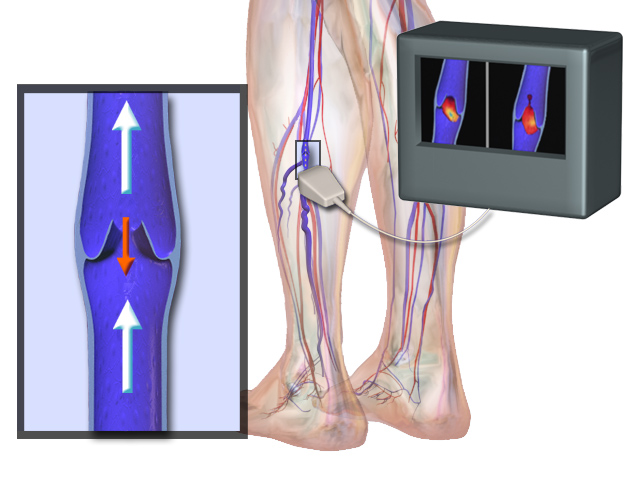
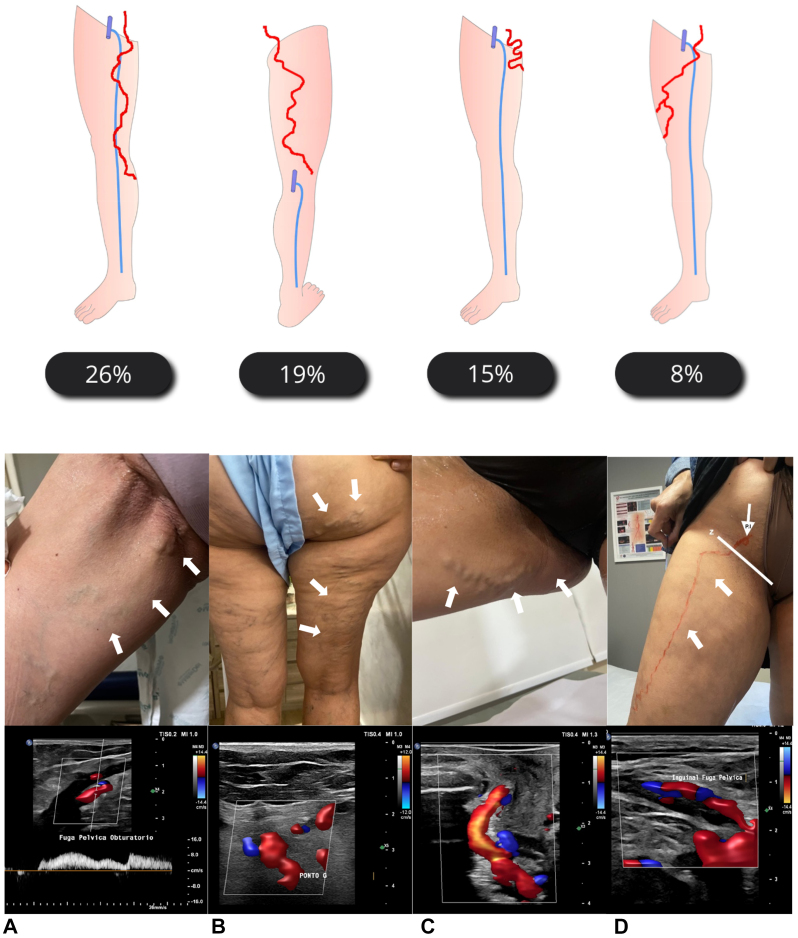
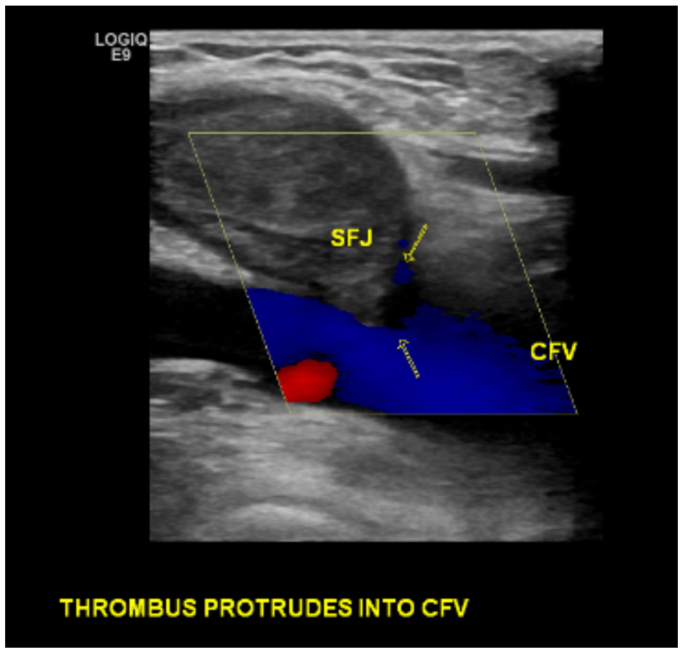
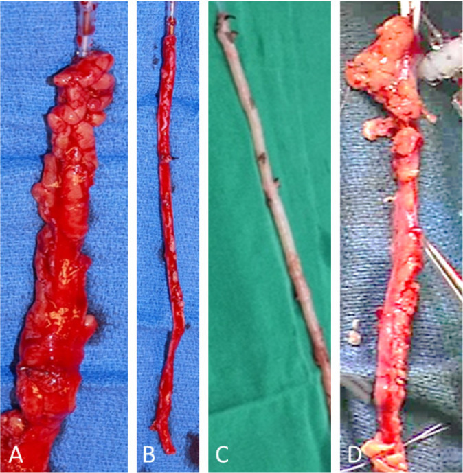
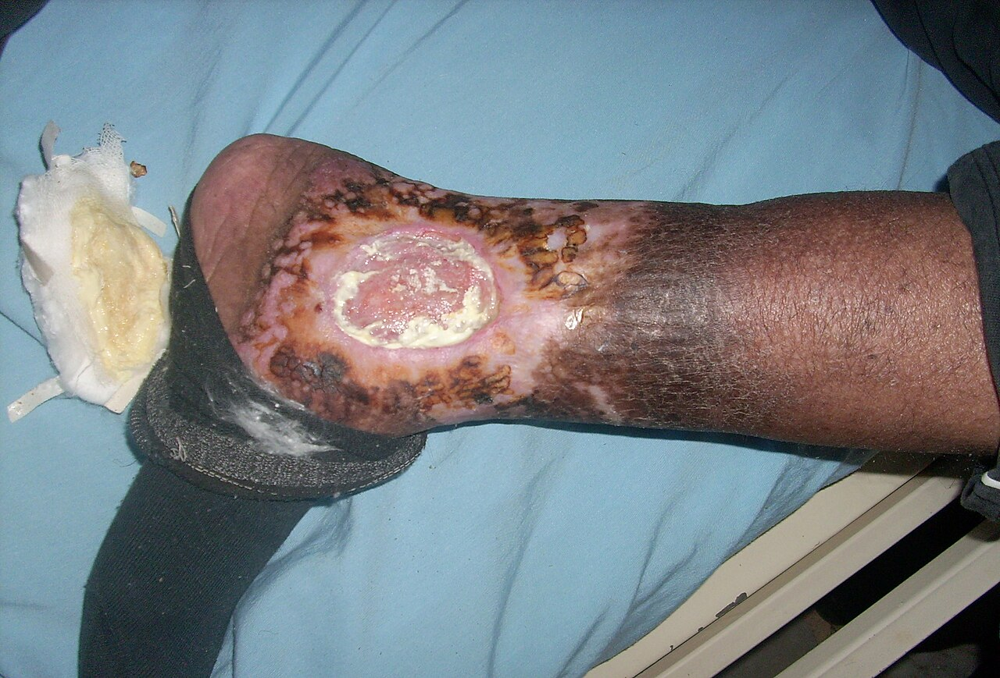

Заболевания вен. Варикозное расширение вен нижних конечностей. Пороки развития
Анатомо-физиологические основы венозного оттока и патогенез венозной гипертензии
Кровь в венах нижних конечностей движется против силы тяжести — снизу вверх, от стопы к сердцу. Кажется, что для этого достаточно разницы давлений, создаваемой сердцем. На деле остаточного давления на выходе из капилляров хватает лишь в покое и при горизонтальном положении тела: в вертикальной стойке и при ходьбе венозный возврат обеспечивается тремя отдельными механизмами, и каждый из них незаменим.

Первый — работа икроножных мышц. Глубокие вены голени и стопы оплетены мощными мышечными массивами, и при каждом шаге мышцы сжимают эти вены, как насос сжимает грушу. Этот механизм называют мышечно-венозной помпой — системой, в которой скелетные мышцы при сокращении выталкивают кровь в проксимальном направлении, а клапаны вен препятствуют её возврату в момент расслабления. Если бы этой помпы не было, давление в венах стопы при длительном стоянии превышало бы 100 мм рт. ст. и удерживалось бы на этом уровне всё время вертикальной нагрузки. Второй механизм — присасывающий эффект грудной клетки: на вдохе внутригрудное давление падает, нижняя полая вена расширяется, и кровь устремляется вверх. Третий — остаточное давление после артериол, которое, пусть и невелико, даёт исходный градиент для движения крови через капилляры в венулы.
Все три механизма работают только при исправных венозных клапанах. Клапан — это пара тонких эндотелиальных створок, закреплённых у стенки вены. Они пропускают кровь вверх и захлопываются, как обратный клапан в трубопроводе, едва давление над ними превысит давление под ними. Когда клапан перестаёт смыкаться полностью, кровь при каждом расслаблении мышц частично возвращается вниз. Это обратное движение крови и называют венозным рефлюксом — патологическим током крови в направлении, противоположном нормальному венозному оттоку.
Рефлюкс бывает двух видов в зависимости от того, по каким венам он распространяется. Вертикальный рефлюкс — это обратный ток крови сверху вниз по магистральным стволам поверхностных вен, прежде всего большой подкожной вены от паховой складки до голени. Представьте себе водосточную трубу с прохудившимися заслонками: вода, которую насос поднял наверх, стекает обратно при малейшей паузе в работе насоса. Именно так ведёт себя кровь в большой подкожной вене при несостоятельном сафено-феморальном соустье. Давление, которое создаётся в нижних отделах ствола при рефлюксе, действует на уже ослабленную стенку вены и расширяет её ещё больше — порочный круг замыкается.
Второй вид — горизонтальный рефлюкс. Он идёт не вдоль конечности, а поперёк: из глубоких вен в поверхностные через перфорантные вены — короткие сосуды, пронизывающие фасцию голени и соединяющие глубокую и поверхностную венозные сети. В норме клапаны перфорантных вен направляют кровь строго из поверхностных вен в глубокие. При несостоятельности этих клапанов высокое давление, которое мышечная помпа создаёт в глубоких венах при сокращении, сбрасывается в поверхностную сеть. Такой горизонтальный сброс особенно опасен в нижней трети голени — в надлодыжечной области, где несостоятельные перфоранты группы Коккета создают стойкую венозную гипертензию прямо над кожей.
На схеме дуплексного сканирования вен голени видны два режима исследования: в серошкальном изображении определяется просвет вены и состояние створок клапана, а в режиме цветного картирования потока регистрируется направление движения крови. При исправном клапане цветовой сигнал над ним однонаправлен — вверх. При несостоятельности клапана в момент пробы Вальсальвы или компрессии голени появляется обратный сигнал — визуальное подтверждение рефлюкса. Именно это изображение нужно читать на практике: не сам факт расширения вены, а наличие и длительность обратного тока.
Оба вида рефлюкса объединяются в единый патогенетический круг. Начинается он с первичной слабости венозной стенки или клапанного аппарата — предположительно, конституциональной. Стенка расширяется, расстояние между точками прикрепления створок клапана увеличивается, и клапан перестаёт смыкаться. Возникает вертикальный рефлюкс по поверхностному стволу. Давление в нижних отделах ствола растёт, перфорантные вены нижней трети голени испытывают повышенную нагрузку — их клапаны постепенно также становятся несостоятельными. Горизонтальный рефлюкс добавляет давление, которое теперь создаётся не только снаружи, но и изнутри, со стороны мощной мышечной помпы. Суммарное давление в подкожных венах голени в покое, когда в норме оно близко к 20–30 мм рт. ст., при развёрнутой картине болезни не снижается даже при ходьбе — помпа давит в обе сети одновременно. Хроническая венозная гипертензия ведёт к пропитыванию тканей белком, фибрин осаждается вокруг капилляров, кожа перестаёт получать питание — и формируется трофическая язва.
При пальпации варикозно изменённые вены ощущаются как мягкие, извитые, легко сжимаемые тяжи. В горизонтальном положении они спадаются, в вертикальном — напрягаются и становятся отчётливее. Особого внимания заслуживает пальпаторный симптом, связанный с артериовенозным сбросом: при некоторых пороках развития сосудов или при выраженных артериовенозных свищах в проекции узлов определяется дрожание или пульсация — признаки, нетипичные для чисто варикозной болезни и указывающие на артериальный компонент в патогенезе. Отсутствие пульсации и дрожания при обычном варикозе, напротив, говорит о том, что венозная гипертензия здесь чисто гидростатическая.
После перенесённого тромбоза глубоких вен картина осложняется: у 44% больных после реканализации сохраняются грубые фибринозные изменения стенок и несостоятельность клапанов глубоких и коммуникантных вен, и глубокие вены превращаются в жёсткие трубки без клапанной функции. В этом случае венозная гипертензия уже не следствие первичного расширения ствола, а результат полной утраты клапанного аппарата на протяжении — и мышечно-венозная помпа не только не помогает, но усугубляет сброс через несостоятельные перфоранты.
Классификация варикозной болезни и хронической венозной недостаточности
Кажется, что расширенные вены на ноге — это единая болезнь, у которой есть только «больше» или «меньше». На деле варикозная болезнь нижних конечностей (ВБНК) делится на принципиально разные формы по тому, где нарушен кровоток и есть ли рефлюкс по глубоким венам. От этого различия зависит и прогноз, и тактика лечения. Чтобы говорить на одном языке, в 2001 году В.С. Савельев предложил классификацию, которая сразу стала стандартом в отечественной флебологии.
Взгляните на классификацию в таблице ниже — она строится по нарастанию тяжести гемодинамических нарушений, и это главное, что нужно удержать в голове.
| Форма | Характеристика рефлюкса | Вовлечённые венозные системы |
|---|---|---|
| 1. Сегментарный варикоз без патологического рефлюкса | Рефлюкса нет | Только поверхностные вены, локальный сегмент |
| 2. Сегментарный варикоз с рефлюксом по поверхностным и/или перфорантным венам | Локальный рефлюкс | Поверхностные и/или перфорантные вены, сегментарно |
| 3. Распространённый варикоз с рефлюксом по поверхностным и перфорантным венам | Распространённый рефлюкс | Поверхностные и перфорантные вены на протяжении конечности |
| 4. Варикозное расширение при наличии рефлюкса по глубоким венам | Глубокий рефлюкс | Глубокие, поверхностные и перфорантные вены |
Первая форма — сегментарный варикоз — это расширение вен в пределах одного анатомического сегмента без патологического сброса крови. Здесь мышечно-венозная помпа работает нормально, клапаны перфорантных вен состоятельны, и венозный рефлюкс инструментально не выявляется. Варикозно расширены лишь небольшой участок притока или небольшой фрагмент ствола большой подкожной вены. Это наименее тяжёлая форма, и именно она чаще всего является поводом для раннего обращения — пока гемодинамика ещё не нарушена.
Вторая форма отличается от первой одним принципиальным признаком: появляется локальный рефлюкс — по стволу поверхностной вены (вертикальный рефлюкс) или через несостоятельные перфорантные вены (горизонтальный рефлюкс). Поражение по-прежнему ограничено сегментом, но теперь давление в варикозных узлах повышается при каждом шаге, потому что помпа выталкивает кровь не только в глубину, но и обратно — в поверхностную сеть. Это и есть отправная точка прогрессирования.
В третьей форме рефлюкс становится распространённым варикозом — термин означает, что поражение охватывает поверхностные вены на большей части конечности и к нему присоединяется недостаточность перфорантных вен. Представьте водопроводную трубу с несколькими дырами по всей длине: куда бы насос ни давил, часть потока уходит не туда. Именно так работает венозная система при третьей форме — мышечно-венозная помпа нагнетает давление, перфорантные вены сбрасывают кровь обратно в подкожную сеть на нескольких уровнях, и варикозные узлы формируются по всей голени и бедру. В преобладающем большинстве случаев поражается большая подкожная вена; малая подкожная вена вовлекается лишь у 5—10 % пациентов, обе вены одновременно — у 7—10 %.
Четвёртая форма — наиболее тяжёлая. К уже описанным нарушениям добавляется глубокий рефлюкс — патологический сброс крови по магистральным глубоким венам конечности вследствие недостаточности их клапанов. Это принципиально иная ситуация: глубокие вены принимают на себя основной объём венозного возврата, и если их клапаны перестают удерживать кровяной столб, давление в венозной системе конечности резко возрастает. Если бы этой формы в классификации не было отдельно, хирург мог бы устранить поверхностный рефлюкс и перевязать перфоранты, не осознавая, что главный источник гипертензии остался нетронутым. Именно поэтому четвёртая форма требует самостоятельного выделения и особого хирургического подхода. Вместе с тем следует оговориться: по данным Миланова, четвёртая форма встречается не так часто, как предполагалось ранее, а роль глубокого рефлюкса в патогенезе ВБНК многими авторами считается преувеличенной; методы его хирургической коррекции, в частности экстравазальные спирали, не вполне оправдали возлагавшихся на них надежд.
Как видно из таблицы, все четыре формы выстроены в единую логику нарастания: от локального косметического дефекта без гемодинамики до тотального венозного блока с вовлечением глубоких магистралей. Граница между второй и третьей формами — это переход от сегментарного к распространённому поражению; граница между третьей и четвёртой — появление глубокого рефлюкса. Именно последний рубеж клинически наиболее значим, потому что глубокий рефлюкс меняет саму стратегию вмешательства: показанием к операции при четвёртой форме является патологический сброс из системы глубоких вен в поверхностные независимо от наличия трофических расстройств.
Классификация Савельева описывает форму болезни, но не её стадию. Параллельно применяется оценка хронической венозной недостаточности (ХВН) — синдрома, который развивается при любой из четырёх форм по мере того, как нарушается отток. Осложнениями ВБНК и ХВН являются кровотечение, тромбофлебит и трофическая язва — последняя указывается с уточнением локализации. Запомните главное: форма по Савельеву определяется уровнем рефлюкса, а не степенью косметического дефекта — это и делает классификацию инструментом выбора тактики, а не просто описанием внешней картины.
Клинические функциональные пробы состояния венозного русла
Физикальное исследование вен нижних конечностей начинается с простого осмотра и пальпации, однако этого недостаточно, чтобы ответить на три хирургических вопроса: где именно происходит сброс крови, работают ли глубокие вены и можно ли безопасно выключить поверхностные. Для этого существуют функциональные пробы — быстрые, бесприборные, но информативные, если выполнять их последовательно и правильно интерпретировать.
Кажется, что наполнение варикозных узлов говорит само за себя: вены расширены — значит, всё понятно. На деле картина расширенных вен одинакова при трёх принципиально разных ситуациях — при вертикальном рефлюксе по стволу большой подкожной вены (БПВ), при горизонтальном рефлюксе через перфорантные вены и при глубоком рефлюксе с заблокированными глубокими стволами. Тактика в каждом из этих случаев разная, и пробы помогают их разграничить.
Проба Троянова–Тренделенбурга — оценка состоятельности остиального клапана и клапанов ствола БПВ — выполняется в два этапа. Сначала пациент ложится на спину, конечность поднимают под углом 45° и поглаживанием опустошают подкожные вены — примерно как выжимают воду из шланга. Затем у паховой складки большим пальцем или жгутом пережимают ствол БПВ в области сафено-феморального соустья и просят пациента встать. Если при этом вены голени и бедра заполняются медленно (в течение 30–35 с), а после резкого снятия жгута стремительно наполняются сверху вниз — это означает, что именно остиальный клапан несостоятелен и кровь получает возможность идти в обратном направлении. Быстрое наполнение ещё до снятия жгута, прямо в положении стоя, — отдельный сигнал: он свидетельствует о поступлении крови через перфорантные вены с несостоятельными клапанами.
Проба Гаккенбруха позволяет уточнить состояние устья БПВ ещё проще. Врач прикладывает пальцы к овальной ямке бедра — туда, где БПВ впадает в бедренную вену, — и просит пациента покашлять. В норме кашель вызывает кратковременное повышение давления в брюшной полости, волна передаётся на бедренную вену, но остиальный клапан её гасит. Если клапан несостоятелен, пальцы ощущают отчётливый толчок — гидравлический удар, который доходит до поверхностной сети. Проба быстрая и не требует никакого оснащения: именно поэтому с неё нередко начинают осмотр стоя.
После того как установлен вертикальный рефлюкс по стволу, нужно найти несостоятельные перфорантные вены, которые дают горизонтальный рефлюкс. Для этого применяют трёхжгутовую пробу Шейниса. Пациента укладывают с поднятой ногой и опустошают вены. Затем накладывают три мягких жгута: первый — под паховой складкой, второй — над коленом, третий — под коленом. Пациент встаёт. Смотрят на участки между жгутами: если вены на каком-либо промежутке заполняются, значит, именно в этом промежутке есть перфорантная вена с несостоятельными клапанами. Представьте себе трубу с тремя зажимами — если между двумя из них появляется вода, источник очевиден. Жгуты затем последовательно снимают снизу вверх, уточняя уровень.
Проба Пратта-1 дополняет трёхжгутовую и также направлена на локализацию несостоятельных перфорантных вен. После опустошения вен в горизонтальном положении на конечность от пальцев до паха накладывают эластичный бинт, а под паховой складкой дополнительно — жгут. Пациент встаёт и начинает ходить. Бинт снимают витками снизу вверх, а навстречу сверху вниз накладывают второй бинт. Расстояние между витками двух бинтов — 5–6 см. Наполнение вен на каком-либо участке в этом «окне» указывает на перфорантную вену с несостоятельными клапанами именно в этой зоне.
Маршевая проба Дельбе–Пертеса отвечает на самостоятельный вопрос: проходимы ли глубокие вены настолько, чтобы принять кровь при нагрузке. Это принципиально: если бы мышечно-венозная помпа работала при заблокированных глубоких стволах, давление в поверхностной системе только нарастало бы, и операция на поверхностных венах обернулась бы катастрофой. Выполняется проба так: пациенту в положении стоя, когда подкожные вены максимально заполнены, ниже коленного сустава накладывают жгут — достаточно плотно, чтобы пережать поверхностные вены, но не артерии. Затем пациент ходит или выполняет 10–15 приседаний в течение 5–10 минут. Если глубокие вены проходимы, работающая мышечно-венозная помпа откачивает кровь, и подкожные вены спадаются. Если они остаются напряжёнными или — хуже — нарастает их наполнение и появляется боль, глубокие вены непроходимы: кровь из мышц некуда деться, давление в коллатералях растёт.
Главный практический вывод раздела: пробы выполняются в определённом порядке. Сначала пробой Гаккенбруха и пробой Троянова–Тренделенбурга оценивают остиальный клапан и ствол БПВ. Затем трёхжгутовой пробой Шейниса и пробой Пратта-1 локализуют несостоятельные перфорантные вены. В последнюю очередь маршевой пробой Дельбе–Пертеса проверяют проходимость глубоких вен — без этого шага любое хирургическое решение о поверхностных венах остаётся неполным.
Инструментальные методы диагностики заболеваний вен нижних конечностей
Клинические пробы — проба Троянова–Тренделенбурга, трёхжгутовая проба Шейниса, маршевая проба Дельбе–Пертеса и другие — дают первое представление о характере рефлюкса и состоянии перфорантных вен. Но они не показывают, где именно расположен несостоятельный клапан, насколько расширена вена и есть ли тромботические изменения в глубокой системе. Именно здесь начинается роль инструментальных методов.

Ультразвуковое дуплексное сканирование вен — метод, совмещающий двумерную ультразвуковую картину сосуда (В-режим) с измерением скорости и направления кровотока (допплеровский режим). Проще говоря: одновременно видно строение вены и то, куда течёт кровь внутри неё. Именно поэтому дуплексное сканирование стало золотым стандартом оценки анатомии и функции венозной системы нижних конечностей. В норме вена легко сжимается датчиком, имеет тонкие стенки, однородный эхонегативный просвет и равномерно прокрашивается при цветном картировании потока. Тромботические массы нарушают все три признака сразу: просвет становится неоднородным, вена перестаёт сжиматься, окраска потока исчезает или прерывается.
Кажется, что для выявления рефлюкса достаточно просто направить датчик на вену в покое. На деле ретроградный ток крови возникает лишь при повышении давления в брюшной полости или при резком сбросе мышечного сжатия — поэтому без функциональных проб исследование теряет смысл. Стандартный приём — проба Вальсальвы: пациент делает форсированный выдох при закрытой голосовой щели, давление в брюшной полости резко растёт, и при несостоятельном клапане кровь устремляется вниз — это и есть патологический венозный рефлюкс, который фиксируется на допплерограмме как обратный пик потока. Второй приём — ручная компрессия: хирург сжимает голень ниже датчика, создаёт искусственный выброс крови вверх, затем отпускает; при несостоятельном клапане следует отчётливый ретроградный сигнал. Именно так различают вертикальный рефлюкс по стволу большой подкожной вены и горизонтальный рефлюкс через несостоятельные перфорантные вены — направление и длительность обратного сигнала на допплерограмме прямо указывают на уровень клапанной недостаточности. Дуплексное сканирование также позволяет выявить сегмент вены, ранее тромбировавшейся, и оценить степень реканализации.
На схемах венозного рефлюкса нижних конечностей показаны основные пути патологического сброса крови: вертикальный — по стволу большой или малой подкожной вены при несостоятельности остиального клапана, горизонтальный — через перфорантные вены при их клапанной недостаточности, и комбинированный, когда оба пути задействованы одновременно. Посмотрите, как на каждом варианте схемы стрелки меняют направление на обратное: именно этот разворот потока и регистрирует допплеровский датчик при компрессионной пробе или пробе Вальсальвы. Большая подкожная вена вовлекается в патологический процесс в подавляющем большинстве случаев, малая подкожная — в 5–10 %; обе вены поражаются одновременно в 7–10 % наблюдений.
Когда дуплексного сканирования недостаточно — например, при планировании повторной операции, при подозрении на глубокий рефлюкс после перенесённого тромбоза или при неясной анатомии — прибегают к контрастной рентгенологической визуализации. Функционально-динамическая флебография — это рентгеноконтрастное исследование венозной системы, при котором контрастное вещество вводят в вену стопы или голени, а серию снимков выполняют в условиях, имитирующих работу мышечно-венозной помпы: пациент совершает движения стопой или ходит по специальной подставке. Если бы этого функционального компонента не было, снимки показывали бы лишь заполнение вен в покое — без информации о том, как работают клапаны при нагрузке и куда уходит кровь при сокращении мышц. На флебограммах в динамической фазе чётко видны локализация патологических изменений в магистральных венах и функция клапанов; в норме в заключительной фазе вены полностью опорожняются от контрастного вещества. При постфлебитическом синдроме с реканализацией глубоких вен функционально-динамическая флебография имеет ограниченное применение, поскольку картина реканализованного тромба искажает оценку клапанного аппарата.
Отдельную задачу решает тазовая флебография — контрастное исследование подвздошных вен и нижней полой вены. Контрастное вещество вводят непосредственно в бедренную вену путём пункции либо катетеризации по Сельдингеру, и это позволяет оценить проходимость подвздошных, тазовых вен и нижней полой вены. Показание — подозрение на илеокавальный блок: ситуации, когда варикоз нижних конечностей обусловлен не клапанной недостаточностью подкожных стволов, а нарушением оттока на уровне таза. Без тазовой флебографии такой блок можно пропустить, и операция на подкожных венах окажется бесполезной. Флебографию при хронической венозной недостаточности назначают не всем подряд: показания возникают при несоответствии клинической картины данным дуплексного сканирования и при планировании сложных реконструктивных вмешательств.
Главный практический вывод: дуплексное сканирование закрывает большинство диагностических задач при варикозной болезни — оно неинвазивно, воспроизводимо и даёт одновременно анатомическую и функциональную информацию; флебография остаётся методом второй линии там, где ультразвук не даёт полного ответа или когда нужна детальная карта магистральных вен перед реконструктивной операцией.
Осложнения варикозного расширения вен нижних конечностей
Варикозная болезнь долго остаётся для пациента лишь косметической проблемой. Но стенка варикозного узла истончена, кожа над ним спаяна с веной и почти лишена подкожной клетчатки — и в какой-то момент это сочетание приводит к одному из трёх тяжёлых осложнений: кровотечению, тромбофлебиту или трофической язве.
Венозное кровотечение — кровотечение из варикозно изменённой поверхностной вены — может возникнуть от самого ничтожного повреждения: лёгкого удара, царапины или даже самопроизвольного разрыва истончённого узла. Кровь изливается струёй и порой теряется в значительном объёме, потому что давление в расширенной вене существенно выше нормы, а сосудистая стенка не способна к полноценному спазму. Первая помощь проста: больного укладывают горизонтально с поднятой ногой и накладывают давящую повязку. Этого, как правило, достаточно для временной остановки. Затем проводят склерооблитерацию или хирургическое удаление источника кровотечения.
Второе по частоте осложнение — варикотромбофлебит, то есть асептическое или инфицированное воспаление стенки варикозного узла с образованием тромба в его просвете. Особого внимания заслуживает варикотромбофлебит сафено-феморального соустья — тромбоз, распространившийся до места впадения большой подкожной вены в бедренную. Его клиническая картина в ряде случаев напоминает ущемлённую бедренную грыжу, и это сходство опасно.
Чтобы разобраться в топографии, представьте слои паховой области изнутри кнаружи. Бедренная артерия занимает среднее положение в сосудисто-нервном пучке, медиальнее от неё — бедренная вена, ещё медиальнее — бедренный канал, через который и выходит бедренная грыжа. Устье большой подкожной вены открывается в бедренную вену с передне-медиальной стороны, непосредственно ниже паховой связки. Когда в этом устье формируется тромб, он даёт плотное болезненное выпячивание именно в паховой области — там же, где «сидит» ущемлённая бедренная грыжа. Различить их позволяет несколько признаков: при варикотромбофлебите выпячивание имеет продолговатую форму и уходит вниз по ходу вены, кожа над ним гиперемирована, хорошо видны и пальпируются другие варикозные узлы на голени и бедре. Ущемлённая грыжа, напротив, округлая, невправимая, перистальтика над ней не выслушивается, и явных варикозных стволов рядом нет. Ультразвуковое дуплексное сканирование вен снимает сомнения в течение нескольких минут. Ошибка здесь дорого стоит: тромбоз устья большой подкожной вены угрожает распространением тромба на бедренную вену и эмболией, тогда как ущемлённую грыжу необходимо оперировать немедленно по иным соображениям.
Наиболее тяжёлое хроническое осложнение — трофическая венозная язва, то есть дефект кожи и подлежащих тканей, возникающий вследствие длительной венозной гипертензии и не склонный к самостоятельному заживлению. Патогенез её укладывается в следующую цепочку. Несостоятельность клапанов перфорантных вен создаёт горизонтальный рефлюкс: кровь под высоким давлением выбрасывается из глубоких вен в поверхностную сеть голени. Давление в венулах и капиллярах нижней трети голени резко возрастает. Через растянутые стенки капилляров в ткани пропотевает не только жидкость, но и крупные белки — прежде всего фибриноген. Он полимеризуется вокруг капилляров в виде фибриновых «манжет», которые нарушают диффузию кислорода к клеткам. Хроническая ишемия кожи завершается некрозом: сначала пигментация и уплотнение (липодерматосклероз), затем венозная экзема с мокнутием и зудом, и наконец — язва.
На снимке — дистальные отделы обеих голеней с выраженным отёком и застойной синюшностью кожи. Обратите внимание на типичную зону поражения: нижняя треть голени, медиальная поверхность, зона проекции перфорантных вен группы Коккета. Именно здесь горизонтальный рефлюкс максимален, и именно здесь язвы возникают чаще всего.
На макрофотографии крупным планом — глубокая округлая язва с подрытыми краями и фибринозным дном. Края уплощены и пигментированы: это результат длительного липодерматосклероза. Дно покрыто серым фибринозным налётом — признак хронического течения без тенденции к грануляции. Такая язва не заживёт до тех пор, пока не будет устранён венозный рефлюкс.
Местное лечение язвы строится по принципу «от влажного к сухому»: сначала очищение антисептическими растворами и протеолитическими ферментами, затем стимуляция грануляции раневыми покрытиями. Но ключевое условие заживления — снижение венозного давления с помощью постоянной компрессии. Здесь особое место занимает повязка Унна (Unna boot) — цинк-желатиновая повязка, которую наносят бинтованием от пальцев до колена несколькими слоями. Застывая, она формирует полужёсткий «сапожок», создающий равномерное дозированное давление на всём протяжении голени: мышечно-венозная помпа работает внутри него как в манжете, и каждый шаг активно выдавливает застоявшуюся кровь. Повязку меняют раз в 5–7 дней по мере уменьшения отёка. Параллельно после стихания острых явлений проводят оперативное устранение рефлюкса — без этого язва рецидивирует практически неизбежно.
Главное, что следует вынести из этого раздела: каждое из осложнений варикозной болезни — кровотечение, тромбоз устья большой подкожной вены и трофическая язва — требует не только местного лечения, но и устранения патологического рефлюкса, иначе любой достигнутый результат окажется временным.
Острый тромбофлебит поверхностных вен
Тромбофлебит поверхностных вен — это острое воспаление стенки подкожной вены, сочетающееся с образованием тромба в её просвете. Два процесса неотделимы: воспаление ускоряет тромбообразование, а тромб поддерживает воспаление. Поверхностные вены нижних конечностей, прежде всего варикозно изменённые, поражаются чаще всего — варикозное расширение создаёт замедление кровотока, повреждение эндотелия и локальный стаз, то есть все три составляющих триады Вирхова.

Пусковые факторы разнообразны. Инфекционные заболевания, травма, оперативные вмешательства, аллергические состояния — каждый из них либо повреждает стенку вены, либо нарушает реологию крови, либо активирует свёртывание. Особое место среди причин занимают злокачественные новообразования. Опухоль выбрасывает в кровь прокоагулянтные вещества, и тромбы начинают образовываться в самых неожиданных местах.
Именно здесь стоит остановиться на одном явлении, которое легко принять за случайность. Кажется, что тромбофлебит, возникающий то в одном месте, то в другом без видимой причины, — просто «неудачное стечение обстоятельств». На деле такая картина носит название симптома Труссо — мигрирующего тромбофлебита как признака паранеопластического синдрома. Тромбы появляются последовательно в разных венах, регрессируют и возникают вновь, причём нередко задолго до того, как опухоль даст о себе знать клинически. Обнаружив мигрирующий тромбофлебит у пациента без очевидной предрасполагающей причины, врач обязан целенаправленно искать онкологическое заболевание.
Клиническая картина обычного тромбофлебита на фоне варикоза узнаваема: по ходу подкожной вены появляется болезненный плотный тяж, кожа над ним краснеет и становится горячей на ощупь, пальпация резко болезненна. Общая реакция — субфебрилитет, умеренный лейкоцитоз. При ограниченном процессе на голени это неприятно, но не опасно для жизни.
Угроза нарастает, когда процесс распространяется вверх по стволу большой подкожной вены (БПВ) или малой подкожной вены (МПВ). Такое распространение называют восходящим тромбофлебитом — тромб как бы ползёт против тока крови, захватывая всё новые сегменты вены. Представьте трубку, которую закупоривают изнутри, продвигаясь от нижнего конца к верхнему: именно так ведёт себя нарастающий тромб в БПВ, поднимаясь от голени к бедру.
Граница в 5—6 см от сафено-феморального соустья становится критической. Здесь БПВ впадает в бедренную вену, и тромб, достигший этого уровня, способен перейти в глубокую венозную систему — сначала в виде флотирующего хвоста, а затем вызвать тромбоз бедренной или подвздошной вены с реальным риском тромбоэмболии лёгочной артерии. Путь распространения тромботического процесса из поверхностной системы в глубокую возможен тремя путями: через сафено-феморальное соустье (БПВ → бедренная вена), через сафено-поплитеальное соустье (МПВ → подколенная вена) и через перфорантные вены, когда тромб распространяется горизонтально из подкожной вены в глубокую через несостоятельный перфорант. Последний путь коварен: он не требует, чтобы тромб добрался до паха, — достаточно вовлечения ближайшей перфорантной вены.
На цветовом допплеровском ультразвуковом исследовании сафено-феморального соустья видна зона перехода большой подкожной вены в бедренную. Цветовое картирование позволяет оценить, заполнен ли просвет соустья кровотоком или перекрыт тромботическими массами: отсутствие цветного сигнала в области соустья при сохранном кровотоке дистальнее — прямой признак тромбоза на этом уровне. Именно этот участок нужно искать прежде всего при восходящем тромбофлебите БПВ, поскольку от положения верхушки тромба относительно соустья зависит тактика лечения.
Ультразвуковое дуплексное сканирование вен — обязательный инструмент в этой ситуации. Оно позволяет точно определить верхнюю границу тромба и оценить, есть ли флотирующий хвост в просвете бедренной вены. Без этой информации хирург действует вслепую.
Если тромб приближается к соустью или уже перешёл в бедренную вену, показана экстренная операция — кроссэктомия (от лат. crux — крест, перекрёсток): перевязка и пересечение БПВ у места её впадения в бедренную вену с перевязкой всех притоков в этой зоне. Смысл операции прост: убрать ворота, через которые тромб может выйти в глубокую систему. Если бы кроссэктомии не существовало, пришлось бы ждать, пока флотирующий тромб оторвётся и достигнет лёгочной артерии, — исход непредсказуемый и нередко фатальный. Кроссэктомию выполняют под местной анестезией даже у тяжёлых пациентов: объём вмешательства невелик, а промедление недопустимо.
Главный вывод раздела: восходящий тромбофлебит БПВ — не «местное» заболевание, а потенциальный источник тромбоэмболии, и тактика определяется не длиной поражённого сегмента, а расстоянием от верхушки тромба до сафено-феморального соустья. Именно это расстояние, измеренное при дуплексном сканировании, решает, достаточно ли консервативного лечения или нужна кроссэктомия.
Хирургическое лечение и склерооблитерация варикозной болезни
Показания к операции определяются одним принципом: устранить патологический сброс крови. Если рефлюкс — вертикальный по стволу большой или малой подкожной вены, горизонтальный через несостоятельные перфоранты, или оба сразу — консервативные меры сдерживают прогрессирование, но не ликвидируют причину. Поэтому хирургическое лечение показано при стволовом и распространённом варикозе с подтверждённым рефлюксом, при рецидивирующем варикотромбофлебите, при трофических нарушениях вплоть до венозной язвы. Менее 10 % больных с тяжёлым течением хронической венозной недостаточности обходятся без операции.

Радикальная флебэктомия при стволовом поражении большой подкожной вены строится из трёх последовательных этапов. Первый — операция Троянова–Тренделенбурга, то есть перевязка и пересечение большой подкожной вены у самого впадения в бедренную: в паховой складке делают разрез, выделяют сафено-феморальное соустье и все притоки, впадающие в этом месте, и лигируют их у основания. Цель — закрыть главный «вход» вертикального рефлюкса с бедра. Второй этап — операция Бэбкокка: удаление ствола вены на протяжении с помощью зонда-зтриппера, который вводят в просвет сосуда через небольшой разрез у лодыжки, проводят вверх до паховой раны и извлекают, выворачивая вену наружу, как чулок. Так ствол убирается через два маленьких разреза вместо длинного разреза по всей ноге. Третий этап — операция Нарата: варикозно изменённые притоки, не удалимые зондом, иссекают через короткие разрезы или проколы по ходу нанесённой заранее разметки. Представьте себе, что хирург «собирает» вену небольшими захватами по пунктиру — именно так выглядят разрезы Нарата при взгляде снаружи.
На интраоперационной макрофотографии — четыре фрагмента резецированных венозных сегментов, уложенных рядом. Стенки сосудов неравномерно утолщены, просвет местами расширен и извит: это наглядно показывает, насколько далеко зашло структурное разрушение стенки при варикозной болезни. Сравните толщину и форму сегментов между собой — разница, которая в живой ноге скрыта под кожей, здесь очевидна.
Горизонтальный рефлюкс через несостоятельные перфоранты требует отдельного вмешательства. Открытая перевязка по Линтону предполагает доступ через длинный разрез по медиальной поверхности голени, что при трофических изменениях кожи плохо заживает. Поэтому сегодня предпочитают эндоскопический вариант — субфасциальную диссекцию перфорантов (subfascial endoscopic perforator surgery, SEPS): под фасцию через прокол выше зоны трофических нарушений вводят эндоскоп и инструмент, клипируют или коагулируют несостоятельные перфоранты изнутри, не касаясь изменённой кожи снаружи. Если бы этого доступа не было, пришлось бы либо оперировать прямо в зоне язвы — с высоким риском нагноения, — либо оставлять горизонтальный рефлюкс нелеченым.
Кажется, что склеротерапия — это просто «укол в вену», после которого она исчезает. На деле механизм совсем другой: склерозирующий раствор повреждает эндотелий и запускает асептическое воспаление стенки, которое заканчивается её облитерацией — вена замещается соединительнотканным тяжом. Компрессионная склеротерапия — введение склерозанта в варикозный узел с немедленной компрессией конечности — применяется при сегментарном варикозе, телеангиэктазиях и как дополнение к хирургическому лечению при небольших остаточных узлах.
Техника выполнения строго последовательна. Сначала в вертикальном положении пациента размечают участки, подлежащие склерозированию. Затем пунктируют вену иглой. Сразу после пункции ногу поднимают, чтобы вена запустела, и только тогда вводят раствор — в пустую трубку, а не в заполненную кровью: это увеличивает контакт препарата со стенкой и снижает его разведение. Для усиления эффекта применяют технику пенного, или воздушного, блока (foam-form): в шприц набирают 1—2 мл склерозирующего раствора и 1—2 мл воздуха. При встряхивании образуется пена, которая заполняет просвет и вытесняет остатки крови — площадь контакта со стенкой резко возрастает. Обычно используют 1% этоксисклерол, тромбовар, 2% фибровейн, 5% фенол или 2% формалин в зависимости от диаметра сосуда. Сразу после введения накладывают компрессионный бандаж или надевают чулок — давление удерживает стенки в спавшемся состоянии и препятствует реканализации.
Выбор между операцией и склеротерапией определяется уровнем рефлюкса: стволовой вертикальный рефлюкс требует хирургического устранения, тогда как небольшие притоки и остаточные узлы после флебэктомии поддаются склеротерапии. Оба метода дополняют, а не исключают друг друга.
Посттромбофлебитический синдром: патогенез и клиническая картина
После перенесённого тромбоза глубоких вен у части пациентов развивается стойкое хроническое расстройство венозного оттока — посттромбофлебитический синдром (ПТФС), или, как его всё чаще называют в современной литературе, посттромботическая болезнь. Второй термин подчёркивает, что речь идёт не о преходящем последствии, а о самостоятельном заболевании с собственным течением, стадиями и исходами. Страдает от него, по разным данным, 1,5–5% населения.

Всё начинается с судьбы тромба. Если в первые дни он не растворился под действием собственного фибринолиза или антикоагулянтной терапии, запускается процесс организации: тромб прорастает соединительной тканью, а внутри него постепенно формируются новые щелевидные каналы. Этот процесс называется реканализацией тромба — то есть восстановлением просвета вены не за счёт рассасывания сгустка, а за счёт прорастания через него новых ходов. Представьте себе трубу, забитую засохшей монтажной пеной: через неё проделали несколько тонких каналов, и вода течёт, но уже совсем иначе, чем по чистой трубе. Наиболее частым исходом тромбозов глубоких вен является именно такая частичная или полная реканализация с утратой клапанного аппарата; реже наступает полная облитерация вены.
Клапаны глубоких вен разрушаются по двум причинам. Во-первых, воспалительный процесс, сопровождающий тромбоз, непосредственно повреждает нежные створки. Во-вторых, при реканализации новообразованные каналы проходят прямо через ткань бывшего тромба и полностью игнорируют анатомию клапанов — те оказываются вмурованы в фиброзный массив и перестают функционировать. Итог: вена проходима, кровь по ней идёт, но клапаны не закрываются. При вертикальном положении тела столб крови, который раньше удерживался клапанами, теперь беспрепятственно давит вниз. Мышечно-венозная помпа голени при каждом шаге вместо того, чтобы продвигать кровь к сердцу, лишь на мгновение уменьшает давление — и сразу же получает обратную волну через несостоятельные перфорантные вены. Венозное давление в нижних отделах голени хронически повышено, причём не только в покое, но и — что особенно губительно — при ходьбе.
Кажется, что после реканализации вена «открылась» и кровообращение восстановилось. На деле у 44% больных, у которых проходимость венозных стволов формально восстановилась, наблюдается выраженное повреждение клапанного аппарата — и именно это повреждение, а не сама окклюзия, определяет тяжесть дальнейшего течения болезни. Если бы клапаны оставались целы, хроническая венозная гипертензия не развивалась бы вовсе, и всё дальнейшее — отёк, пигментация, язвы — попросту не наступало бы.
Клиническая картина ПТФС складывается из нескольких постоянных симптомов. Первый и самый ранний — отёк: поначалу он появляется к вечеру и проходит за ночь, но по мере прогрессирования становится стойким. Отёк при ПТФС плотный и не оставляет длительной ямки при надавливании — это важное отличие от сердечного или почечного отёка. Второй симптом — тупые распирающие боли в голени, усиливающиеся после длительного стояния и уменьшающиеся в горизонтальном положении с приподнятой ногой. Третий — гиперпигментация кожи в нижней трети голени: выход эритроцитов через стенку капилляров, перегруженных давлением, ведёт к отложению гемосидерина, и кожа приобретает тёмно-коричневый цвет. Четвёртый — индурация подкожной клетчатки: хроническое воспаление и отёк замещаются фиброзом, ткани становятся плотными, деревянистыми на ощупь, кожа спаивается с подлежащими слоями.
Сочетание индурации с воспалительными изменениями кожи и подкожной клетчатки обозначают термином липодерматосклероз — буквально «затвердение кожи и жировой ткани». Это не просто косметический дефект: фиброзно изменённая клетчатка хуже пропускает питательные вещества к коже, капиллярная сеть в ней редуцирована, и любое незначительное повреждение — ссадина, укус насекомого, расчёс — превращается в незаживающий дефект.
В третьей, наиболее тяжёлой стадии ПТФС к описанным изменениям присоединяются застойный дерматит и мокнущая экзема. Кожа краснеет, шелушится, нестерпимо зудит — пациент расчёсывает её, и на фоне липодерматосклероза эти повреждения уже не заживают. Так формируются рецидивирующие трофические язвы: сначала небольшие, поверхностные, затем всё более обширные, с подрытыми краями и некротическим налётом на дне.
На фотографии нижней трети голени видна обширная мокнущая язва с желтоватым фибринозным налётом на дне и воспалённой гиперпигментированной кожей по периферии — типичная картина третьей стадии ПТФС. Обратите внимание на то, как далеко от края язвы распространяется индурация и потемнение кожи: это и есть зона липодерматосклероза, которая определяет реальный масштаб поражения тканей.
Ход патологического процесса при ПТФС удобно представить как цепочку из пяти шагов. Первый: тромб организуется и реканализируется, но клапаны разрушены. Второй: глубокий рефлюкс через несостоятельные клапаны формирует хроническую венозную гипертензию. Третий: повышенное давление передаётся через несостоятельные перфорантные вены в поверхностную систему — развивается вторичное варикозное расширение поверхностных вен. Четвёртый: капиллярная гипертензия приводит к пропотеванию белка и эритроцитов в ткани, запускается хроническое воспаление, формируется липодерматосклероз. Пятый: трофика кожи нарушена настолько, что даже минимальная травма ведёт к образованию незаживающей язвы. Таким образом, венозная язва при ПТФС — это финал многолетнего разрушения клапанного аппарата, а не самостоятельное поражение кожи.
Лечебная тактика при посттромбофлебитическом синдроме
После перенесённого тромбоза глубоких вен картина выглядит обнадёживающей: проходимость венозных стволов со временем восстанавливается примерно у половины пациентов. Но у 44 % больных клапанный аппарат оказывается повреждён безвозвратно. Именно сломанные клапаны, а не остаточная закупорка, становятся главным источником глубокого рефлюкса и запускают всю цепочку хронической венозной недостаточности.
Кажется, что чем тяжелее посттромбофлебитический синдром (ПТФС), тем нужнее операция — и чем раньше, тем лучше. На деле консервативная терапия остаётся основой лечения и при лёгком, и при умеренном ПТФС, а хирургия вступает там, где компрессия и флеботоники исчерпали возможности.
Консервативная терапия
Фундамент консервативного лечения — компрессия. Она замещает работу несостоятельных клапанов: внешнее давление сжимает просвет вены, ускоряет венозный кровоток и разгружает мышечно-венозную помпу. Подбор компрессионного трикотажа должен быть дифференцированным. При преобладании отёка и хронической венозной недостаточности без трофических изменений достаточен второй класс компрессии; при выраженном липодерматосклерозе и активной трофической венозной язве нужен третий класс. Трикотаж надевают лёжа, до подъёма с постели, — иначе вены успевают наполниться, и компрессия уже не уберёт накопившийся отёк. Параллельно назначают флеботоники (диосмин, троксерутин) и, при необходимости, антикоагулянты для профилактики ретромбоза.
Принципы хирургического лечения ПТФС
Показанием к операции служит патологический сброс из глубоких вен в поверхностные независимо от выраженности трофических расстройств. Два принципа определяют логику любого вмешательства при ПТФС: устранить патологический рефлюкс крови из глубоких вен в поверхностные и сохранить те сегменты большой и малой подкожных вен, которые не изменены. Если бы этого принципа не существовало, хирург удалял бы весь поверхностный ствол — и лишал пациента потенциального материала для шунтирования коронарных или периферических артерий в будущем.
Вмешательства при ПТФС делятся на три направления: коррекция патологических перфорантных сбросов, реконструкция глубоких вен при их окклюзии и восстановление клапанной функции.
Хирургическая коррекция патологических перфорантных сбросов
При ПТФС перфорантные вены нередко становятся «воротами» горизонтального рефлюкса: высокое давление в реканализованных, но лишённых клапанов глубоких венах гонит кровь через перфоранты в поверхностную сеть. Субфасциальная диссекция перфорантов позволяет пересечь эти патологические каналы под фасцией — то есть до их выхода в подкожный слой. Миниинвазивная эндоскопическая техника существенно снизила число раневых осложнений в зоне трофических изменений кожи голени, которая при открытом доступе плохо заживает.
Реконструктивные вмешательства на глубоких венах
При окклюзии подвздошных вен — сегмента, который при ПТФС страдает особенно часто, — выполняют операцию Пальма (операция Пальма, или перекрёстное бедренно-бедренное шунтирование — cross-over femorofemoral bypass): больную вену обходят в обход, используя здоровую вену с противоположной стороны. Ход вмешательства таков: выделяют большую подкожную вену здоровой конечности и, не пересекая у устья, туннелируют её над лобковым симфизом под кожей или позади него — в надлобковой позиции. Вену переводят на сторону больной конечности и вшивают анастомоз конец-в-бок с общей бедренной веной ниже окклюзии. Получается дуга: кровь из заблокированной подвздошной системы перетекает через шунт в здоровую подвздошную вену и далее в нижнюю полую. Представьте себе объездную дорогу над городской площадью — именно так этот шунт «огибает» закрытый участок магистрали таза.
На интраоперационной фотографии видна паховая и надлобковая область во время открытого вмешательства. В центре кадра прослеживается ход венозного трансплантата, уложенного в надлобковый туннель: обратите внимание на положение анастомоза с бедренной веной — он формируется без натяжения, и трансплантат не перегибается на перегибе лобка.
При стенозе, а не полной окклюзии подвздошного сегмента всё чаще применяют эндоваскулярную баллонную дилатацию со стентированием — менее травматичную альтернативу открытой реконструкции.
Серия рентгеноскопических снимков таза демонстрирует этапы баллонной дилатации и установки стента в подвздошную вену. На первом кадре хорошо виден «стоп-контраст» — зона, где контрастное вещество не проходит дальше, что соответствует окклюзии или выраженному стенозу. На последнем кадре той же серии просвет восстановлен: контраст свободно заполняет вену выше стента и уходит в нижнюю полую.
Экстравазальная коррекция клапанов
Когда глубокие вены проходимы, но клапаны в них несостоятельны, прибегают к экстравазальной коррекции клапанов — вмешательству снаружи вены, не вскрывая её просвета. Суть простая: вокруг вены в зоне несостоятельного клапана накладывают манжету или П-образные швы, которые уменьшают диаметр просвета ровно настолько, чтобы разошедшиеся створки клапана снова смыкались. Сосуд остаётся цел, кровоток не прерывается, а клапан начинает удерживать столб крови при рефлюксе. Операция технически деликатна: слишком тугая манжета создаст стеноз, слишком слабая не даст эффекта.
Ключевой вывод раздела: при ПТФС лечение всегда начинают с компрессии и флеботоников; хирургия направлена на конкретный механизм — окклюзию, горизонтальный рефлюкс через перфоранты или несостоятельность клапанов глубоких вен — и планируется только после точной инструментальной карты поражения.
Врождённые сосудистые дисплазии вен нижних конечностей
Варикозно расширенные вены на ногах — явление настолько распространённое, что кажется очевидным: если вены расширены, значит перед нами варикозная болезнь. На деле примерно у части пациентов с расширенными подкожными венами за этим стоит не первичная болезнь, а врождённый порок развития сосудов — ангиодисплазия. Упустить это различие — значит назначить ошибочную операцию и усугубить состояние.
Врождённые ангиодисплазии нижних конечностей делят на две большие группы. Первая — флебоангиодисплазия (аномалия развития именно венозного русла без прямого участия артерий), вторая — артериовенозная дисплазия (порок, при котором артериальная кровь сбрасывается прямо в венозную систему через патологические соустья). Каждая из групп имеет свой типичный синдром с именным названием, своё течение и свою операционную логику.
Синдром Клиппеля–Треноне — классическое проявление флебоангиодисплазии. Порок формируется внутриутробно: глубокие вены конечности недоразвиты или частично отсутствуют, а нагрузка перераспределяется на поверхностную систему. Клинически синдром узнаётся по триаде: варикозное расширение поверхностных вен нетипичной, часто боковой локализации; врождённые сосудистые пятна на коже — «винные» ангиомы; и гипертрофия поражённой конечности — она длиннее и толще здоровой. Варикоз при синдроме Клиппеля–Треноне носит компенсаторный характер: поверхностные вены берут на себя отток, который в норме идёт по глубоким стволам. Именно поэтому удаление этих вен — грубая ошибка: убрав компенсаторный путь, хирург лишает конечность единственного венозного дренажа.
Синдром Паркса Вебера–Рубашова — проявление артериовенозной дисплазии. Здесь суть иная: между артериями и венами сформированы множественные врождённые свищи — прямые соединения, по-латыни fistulae arteriovenosae. Артериальная кровь под высоким давлением устремляется в венозную систему, минуя капиллярное русло. Последствия предсказуемы: вены перегружены, расширены и напряжены; ткани вокруг свищей перегреты — их температура заметно выше, чем на здоровой конечности, и это ощущается рукой при пальпации. Конечность также гипертрофирована, однако механизм другой — избыточное кровоснабжение стимулирует рост костей и мягких тканей. Варикоз при этом синдроме тоже вторичен, но причина противоположная: не дефицит оттока, а артериальный напор, распирающий вены изнутри.
Посмотрите на сравнительную таблицу двух синдромов — она собирает признаки рядом, чтобы различие читалось сразу.
| Критерий | Синдром Клиппеля–Треноне | Синдром Паркса Вебера–Рубашова |
|---|---|---|
| Тип дисплазии | Флебоангиодисплазия (венозный порок) | Артериовенозная дисплазия (свищи) |
| Триада признаков | Варикоз боковой локализации; сосудистые пятна кожи; гипертрофия конечности | Варикоз; гипертрофия конечности; локальная гипертермия тканей |
| Температура кожи | Не изменена или умеренно повышена | Заметно повышена над зонами свищей |
| Пульсация вен | Отсутствует | Присутствует (артериальный напор) |
| Состояние глубоких вен | Гипоплазия или аплазия | Как правило, проходимы |
| Механизм варикоза | Компенсаторный: замещает глубокий отток | Вторичный: перегрузка давлением из артерий |
| Удаление варикозных вен | Противопоказано — единственный путь оттока | Возможно как симптоматическая мера |
| Нагрузка на сердце | Не характерна | Хронически повышена из-за артериовенозного сброса |
Как видно из таблицы, принципиальное различие — в природе самого порока. При синдроме Клиппеля–Треноне глубокие вены недоразвиты, поверхностный варикоз компенсирует их отсутствие, температура кожи меняется незначительно, пульсации вен нет. При синдроме Паркса Вебера–Рубашова глубокие вены обычно проходимы, зато свищи создают артериальный напор: вены пульсируют, кожа над свищами заметно горячее на ощупь, а сердце работает с постоянной перегрузкой объёмом — сброс артериальной крови в вены идёт непрерывно. Самая практически важная строка — об удалении варикозных вен: при Клиппеле–Треноне это грубая ошибка, при Паркса Вебера–Рубашова операция допустима как симптоматическая мера, хотя свищи при этом остаются.
Дифференциальная диагностика врождённых дисплазий и первичной варикозной болезни строится на нескольких опорных точках. Первичный варикоз манифестирует чаще всего после 30–40 лет, нередко у нескольких членов семьи, и усиливается после беременностей или длительного стояния. Врождённые дисплазии, напротив, заметны с детства: расширение вен, разница в длине ног и сосудистые пятна присутствуют уже в школьном возрасте. Маршевая проба Дельбе–Пертеса при синдроме Клиппеля–Треноне часто отрицательна или даже даёт усиление распирания — потому что глубокие вены не принимают кровь в полном объёме. При первичном варикозе проба, как правило, положительна: глубокие стволы проходимы и разгружают поверхностную систему при ходьбе.
Ультразвуковое дуплексное сканирование вен — обязательный инструмент в обоих случаях: оно показывает состояние глубоких стволов, выявляет гипоплазию или аплазию при синдроме Клиппеля–Треноне и позволяет зафиксировать характерную турбулентность и пульсацию у пациентов с артериовенозными свищами. Функционально-динамическая флебография и тазовая флебография дополняют картину при сложных анатомических вариантах. Главный вывод раздела: наличие варикозно расширенных вен у молодого пациента с разницей в размерах конечностей требует исключения врождённой дисплазии до любого хирургического решения — цена ошибки здесь несопоставимо выше, чем при первичной варикозной болезни.
Варикозное расширение вен нижних конечностей: определение, формы и эпидемиология
Вены нижних конечностей работают против силы тяжести: кровь должна подниматься вверх, и для этого у венозной стенки есть клапаны. Когда стенка теряет эластичность, а клапаны перестают смыкаться, вена расширяется, удлиняется и начинает извиваться. Именно это состояние называют варикозным расширением вен нижних конечностей (varicosis, varices) — полиэтиологическим заболеванием, при котором поверхностные вены приобретают мешковидную или цилиндрическую дилатацию, змеевидную извитость, увеличение длины и недостаточность клапанов. Слово «полиэтиологическое» здесь не формальная оговорка: к болезни ведут и наследственная слабость соединительной ткани, и длительная ортостатическая нагрузка, и гормональные сдвиги, и перенесённый тромбоз — ни одна причина не является обязательной и достаточной.
Следствием варикозного расширения почти неизбежно становится хроническая венозная недостаточность (ХВН) — стойкое нарушение венозного оттока, которое проявляется отёками, трофическими изменениями кожи и в конечном счёте язвами голени. Именно ХВН определяет медико-социальное бремя болезни: варикозным расширением вен страдает до 25–30% трудоспособного населения, а среди женщин доля заболевших закономерно выше из-за гормональных и акушерских факторов. По другим данным, признаки варикозной болезни обнаруживают у 17–25% населения в целом. Расхождение цифр объясняется разными диагностическими критериями: одни авторы считают только клинически значимые формы, другие — любое расширение поверхностных вен. Так или иначе, речь идёт о болезни, которую встречают на каждом хирургическом приёме.
Первое разграничение, без которого невозможна ни правильная тактика, ни понимание патогенеза, — это деление на первичную и вторичную формы. Первичный варикоз развивается при исходно нормальных глубоких венах: расширяются лишь поверхностные стволы, а причиной служит врождённая или приобретённая слабость венозной стенки и клапанного аппарата. Вторичный варикоз — это уже осложнение болезни глубоких вен: перенесённый тромбоз, облитерация или клапанная недостаточность глубоких стволов приводят к тому, что поверхностные вены берут на себя избыточный отток и расширяются под давлением. Это различие принципиально: при первичной форме глубокие вены здоровы и хирург может смело их использовать; при вторичной устранение поверхностных варикозов без коррекции глубокого кровотока может усугубить ситуацию.
Ключевые различия между двумя формами собраны ниже — посмотрите на сравнение в Таблице 1, а затем разберём каждое из них по существу.
| Признак | Первичный варикоз | Вторичный варикоз |
|---|---|---|
| Причина | Врождённая или приобретённая слабость стенки и клапанов поверхностных вен | Тромбоз, облитерация или клапанная недостаточность глубоких вен |
| Состояние глубоких вен | Нормальные, проходимые | Поражены (постромботические изменения, облитерация) |
| Роль поверхностных вен | Первично расширены | Расширены вторично, компенсируют нарушенный глубокий отток |
| Хирургическая тактика | Удаление поверхностных стволов безопасно | Удаление поверхностных вен без коррекции глубоких может ухудшить отток |
| Прогноз при правильном лечении | Благоприятный | Зависит от состояния глубоких вен; рецидив ХВН вероятен |
Как видно из таблицы, главное различие — не в картине расширенных вен, которая внешне может быть одинаковой, а в состоянии глубоких стволов. При первичном варикозе глубокие вены нормальны и проходимы, поэтому удаление поверхностных стволов не лишает конечность венозного дренажа. При вторичном расширении поверхностные вены выполняют роль обходного пути: они расширились именно потому, что глубокие повреждены — облитерированы или несут постромботические изменения с клапанной недостаточностью. Удалить такой «обход» без предварительной коррекции глубокого кровотока — значит усилить венозную гипертензию и ускорить трофические расстройства. Прогноз при первичной форме при правильном лечении благоприятный; при вторичной он определяется прежде всего тем, насколько восстановима функция глубоких вен.
Теперь о топографии. Поверхностные вены нижних конечностей собраны в два главных бассейна. Первый — бассейн большой подкожной вены (БПВ, v. saphena magna): она начинается у медиального края стопы, проходит по внутренней поверхности голени и бедра и впадает в бедренную вену через сафено-феморальное соустье. Это самый длинный венозный ствол тела, и именно он поражается при варикозе чаще всего. Второй — бассейн малой подкожной вены (МПВ, v. saphena parva): она располагается по задней поверхности голени и впадает в подколенную вену через сафено-поплитеальное соустье. Изолированное поражение МПВ встречается реже, но нередко сочетается с расширением БПВ. Понимать эту топографию нужно уже сейчас, потому что выбор хирургического доступа целиком определяется тем, какой бассейн вовлечён и где именно несостоятелен клапан.
Итог раздела: варикозное расширение вен нижних конечностей — полиэтиологическое заболевание с поражением стенки и клапанов поверхностных вен; первичная форма протекает при здоровых глубоких венах, вторичная — всегда их следствие, и это различие определяет всю лечебную тактику.
Источники
- Госпитальная хирургия. Синдромология. Миланов 2013
- Хирургические болезни. Кузин
Иллюстрации
- Wikimedia Commons, CC BY-SA 4.0, https://commons.wikimedia.org/wiki/File%3AVaricose_Veins_%28Echogram%29.png
- Wikimedia Commons, CC BY-NC-ND, https://europepmc.org/article/PMC/PMC13202557
- Wikimedia Commons, CC BY-SA 4.0, https://commons.wikimedia.org/wiki/File%3A%C3%9Alcera_varicosa_%28RPS_24-08-2020%29_en_pierna_con_insuficiencia_venosa_cr%C3%B3nica.png
- Wikimedia Commons, PUBLIC DOMAIN, https://commons.wikimedia.org/wiki/File%3ALeg_ulcer.png
- Wikimedia Commons, CC BY, https://europepmc.org/article/PMC/PMC12151172
- Wikimedia Commons, CC BY, https://europepmc.org/article/PMC/PMC9454289
- Wikimedia Commons, CC BY-SA 4.0, https://commons.wikimedia.org/wiki/File%3AChronic_venous_insufficiency_%26_Venous_ulcer.jpg
- Wikimedia Commons, CC BY-NC, https://europepmc.org/article/PMC/PMC12644393
- Wikimedia Commons, CC BY-NC-ND, https://europepmc.org/article/PMC/PMC13124737